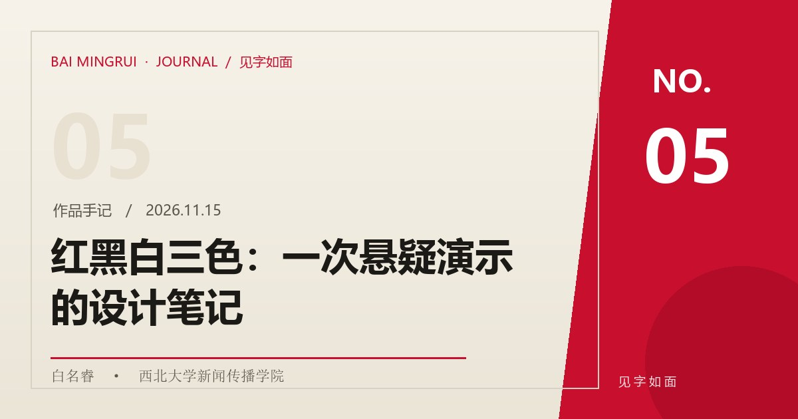

NO. 05 · 作品手记
红黑白三色：一次悬疑演示的设计笔记
第 4 次作业交的是一份悬疑主题演示。整个页面只用三种颜色：红、黑、白。

第 4 次作业是做一份悬疑主题的演示。我给自己的限制是：全篇只用红、黑、白。颜色一少，气氛反而容易出来——剩下的就全靠构图、留白和节奏。
三个视觉锚点
第一个是红落日封面：一个巨大的红色圆形压在黑色地平线上，标题用白色衬线字压在圆里，不解释剧情，先把情绪立住。第二个是剪影：人物不出正脸，只用轮廓，观众自己会补完故事。第三个藏得深一点——页面角落有一排小士兵图标，每翻一页少一个，对应《无人生还》的倒数，算是给认真看的人留的彩蛋。
「悬疑感不是把东西藏起来，是让观众意识到有东西被藏起来了。」
返工最多的其实是排版
做的时候踩了不少坑：红球层级压过了标题、页脚和正文叠在一起、留声机与法官的剪影太暗看不清、放大镜装饰压住了字、长标题折行把版心撑破。每一处都是截了图才发现，再回头调间距、改字号、换对齐。
- 标题折行：收窄字距、缩小字号，必要时手动断行；
- 元素太暗：不用纯黑，改成带一点点暖调的深灰，剪影才看得见；
- 装饰压字：给文字区单独留安全边距，装饰元素一律放到版心之外。
为什么同时交三种格式
最后交付的是三件套：可交互的 HTML 页面、8 页图片的 PPTX（每页都写了演讲备注）、以及一份 PDF。HTML 用来呈现转场和悬停，PPTX 方便课堂放映，PDF 方便打印和存档。三份内容一致，只是各自照顾不同的场合。
做完最大的感受是：视觉风格越克制，越经得起放大看。红黑白这种限制，逼着我把每一处间距都调明白。